Bienvenidos y bienvenidas
Este sitio acompaña a estudiantes del Programa Puente en su recorrido por la materia Geografía.
Accesos importantes
Módulo 1: Introducción a la Geografía
Se abordan los fundamentos de la Geografía, las formas de representar el espacio geográfico y la relación entre sociedad y naturaleza en el territorio argentino.
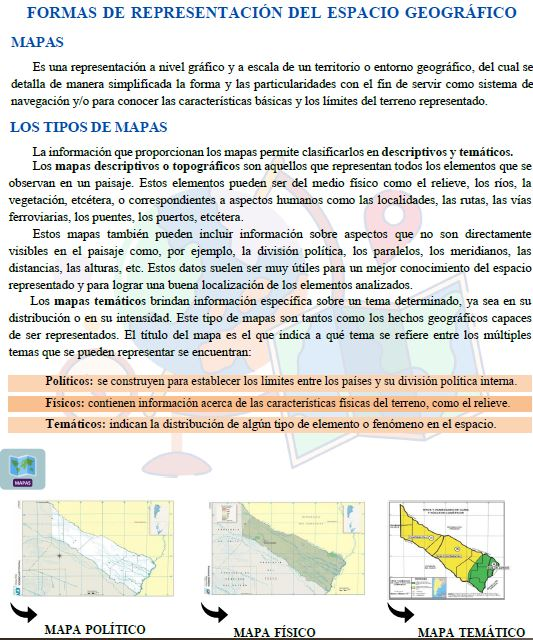
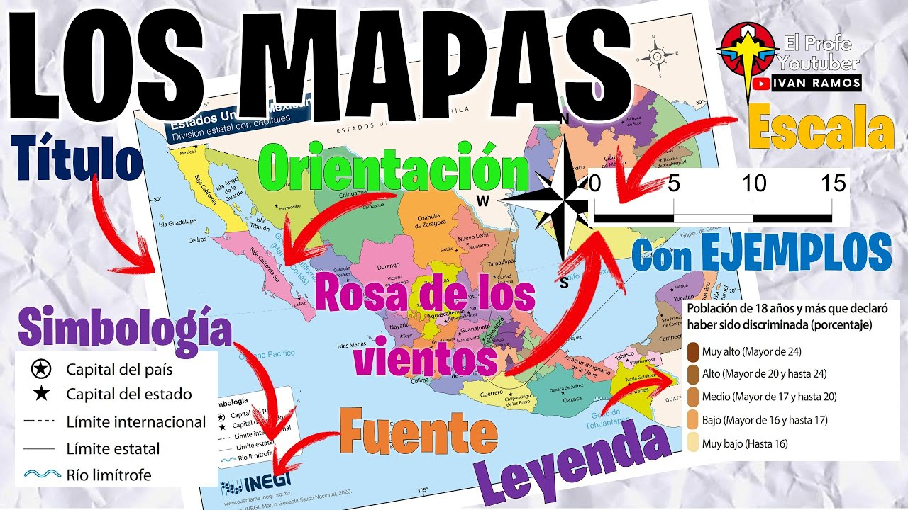
Módulo 2: Dimensión socio-demográfica de los territorios
Se analizan la estructura y dinámica poblacional, las migraciones, y las transformaciones de los espacios urbanos y rurales.
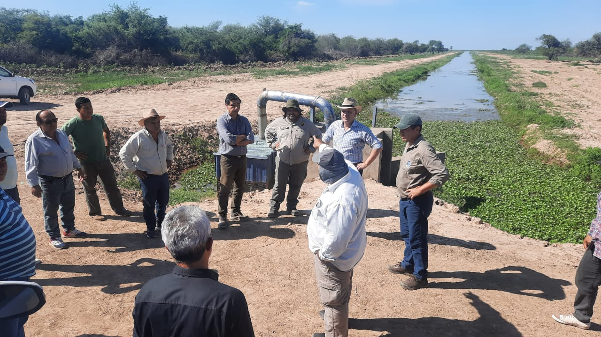
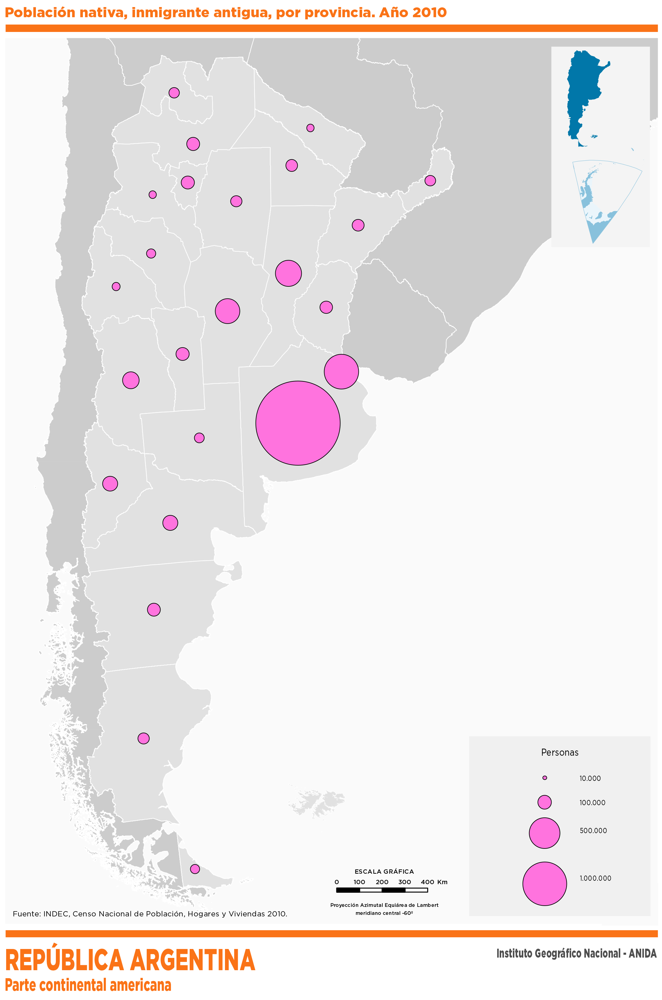
Módulo 3: Dimensión ambiental de los territorios
Reflexiona sobre el uso de los recursos naturales, los problemas ambientales y los riesgos frente a catástrofes en diferentes territorios.
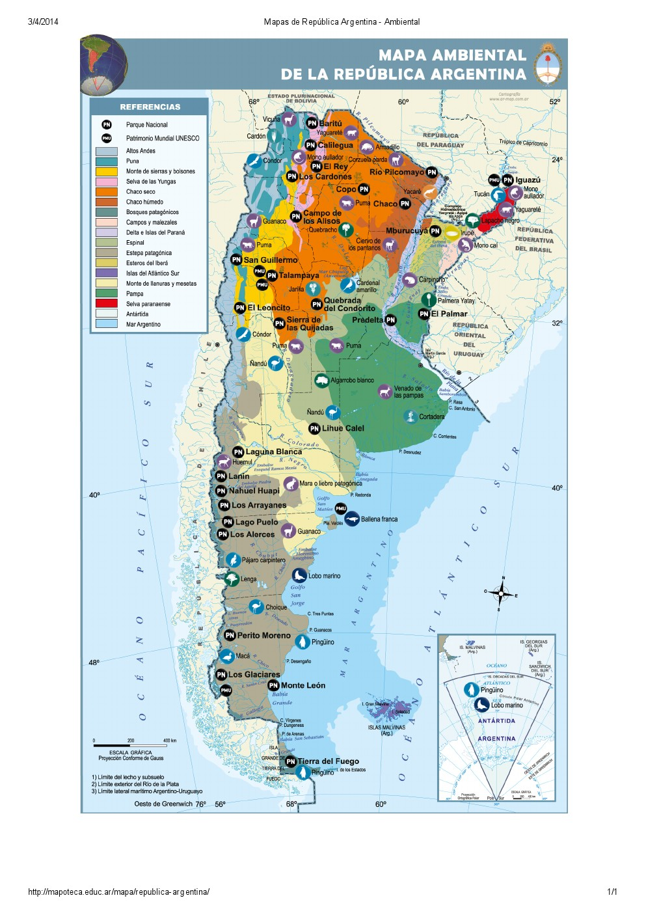
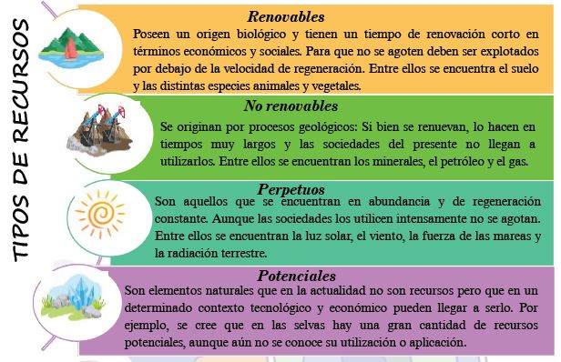
Módulo 4: Dimensión económica de los territorios
Explora cómo se organiza la producción en un contexto global, las transformaciones tecnológicas, los mercados laborales y las redes de circulación.
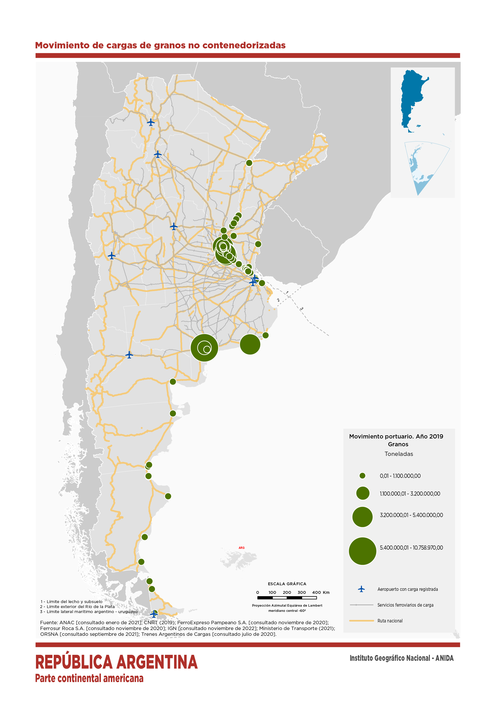
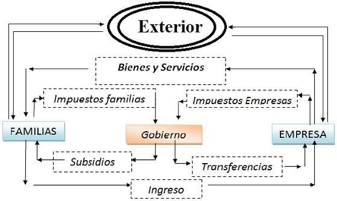
Módulo 5: Dimensión cultural de los territorios
Se estudia la diversidad cultural, los símbolos, las memorias colectivas y los sentidos de pertenencia en los espacios rurales y urbanos.
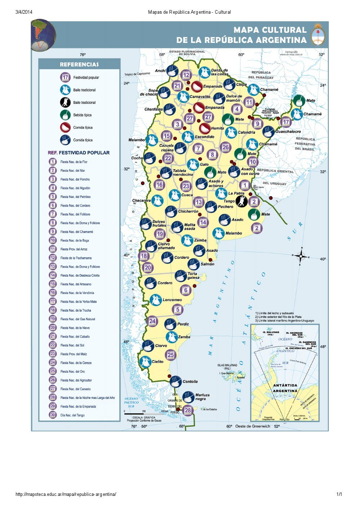
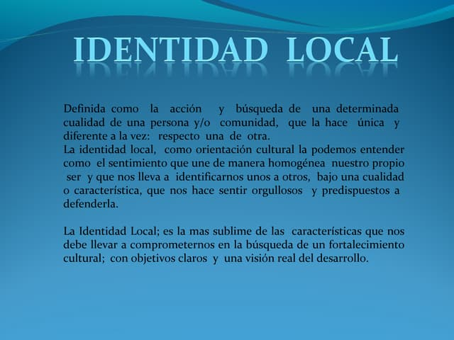
Módulo 6: Nociones de Geografía de Formosa
Analiza las características geográficas de la provincia de Formosa: regiones naturales, potencialidades productivas, división política y población.
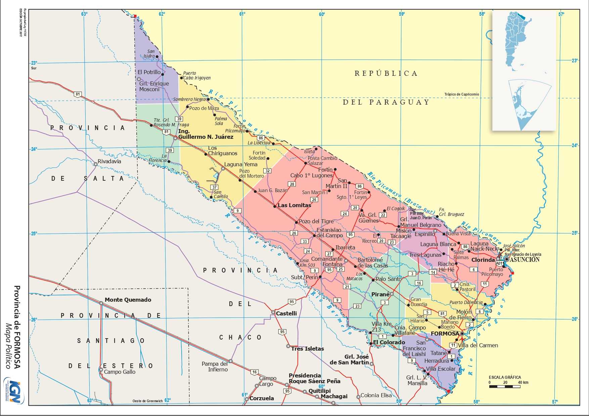
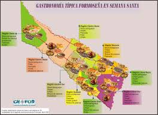
Módulo 7: Autoevaluación
En esta sección los estudiantes pueden repasar, practicar y autoevaluar lo aprendido a lo largo de todos los módulos del curso de Geografía.
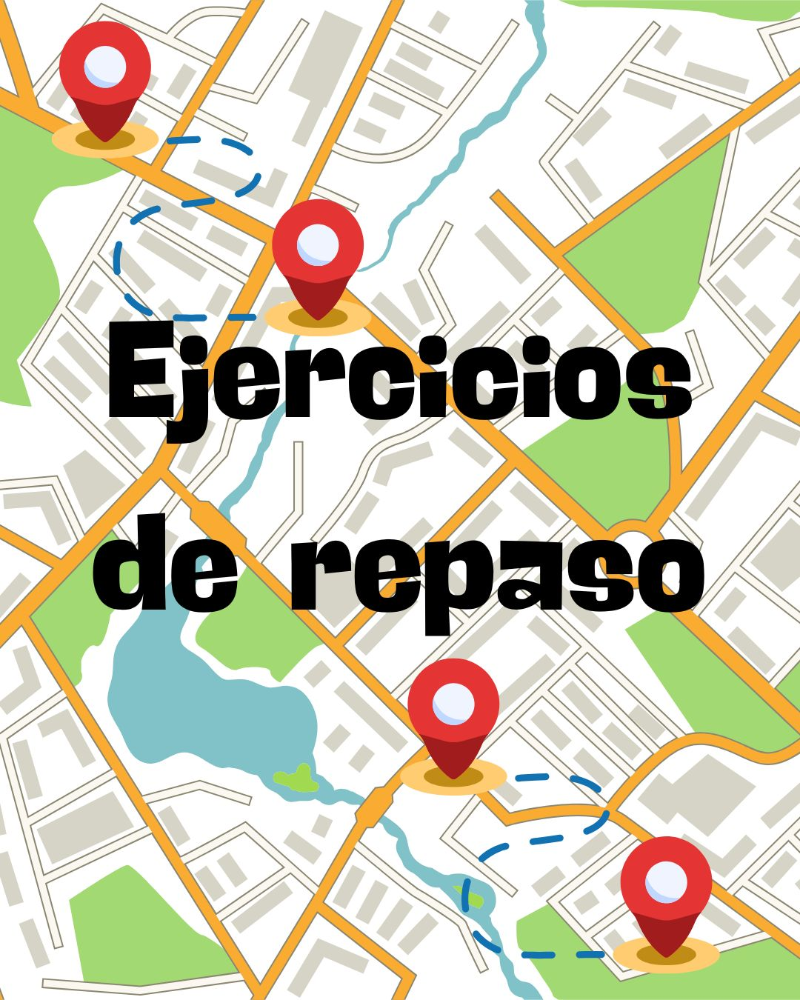
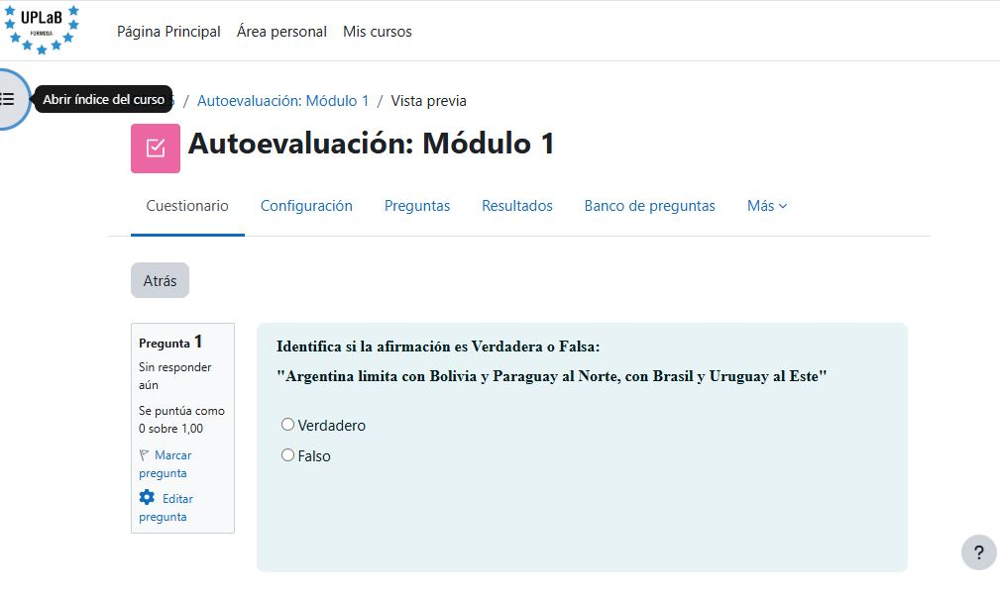